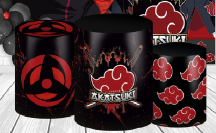

Quem Somos
A Akatsuki (暁, "Amanhecer") é uma organização criada com o objetivo de alcançar a paz, ela foi criada por Yahiko, Konan e Nagato, com o objetivo de lutar contra a opressão em sua aldeia natal, Amegakure. Com a morte de Yahiko, o foco da Akatsuki mudou e eles passaram a buscar a captura das Bijus (as nove bestas de cauda) para ressuscitar a Juubi e alcançar a paz mundial. A Akatsuki é composta por ninjas renegados de diversas vilas, com habilidades e poderes únicos.
Nossos Produtos
Uma fantasia, uma caneca e uma pulseira da akatsuki: o que estes produtos têm em comum? Aparentemente nada. Mas para nós da Akatsuki eles não são apenas produtos, pois são únicos, autorais. Foram criados por pessoas que se preocuparam com cada detalhe, desde concepção da ideia até a chegada nas mãos do comprador.Idhdggh